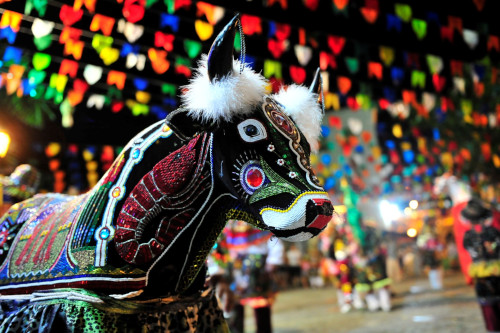
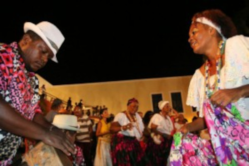
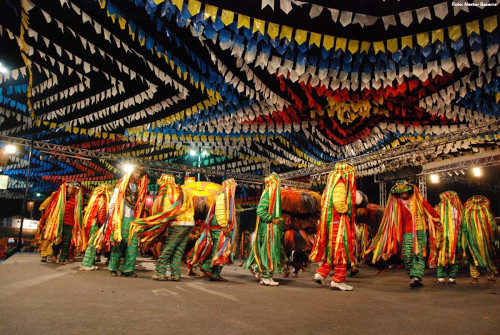
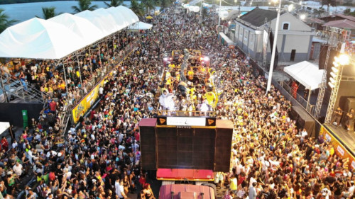
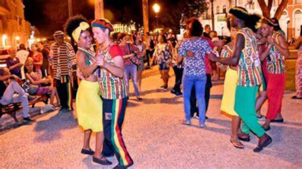

Cultura e Festas Populares
Bumba meu Boi
Num espetáculo de cores, danças e ritmos, o Bumba-Meu-Boi é a expressão máxima da cultura popular do Maranhão. Elevado a Patrimônio Imaterial do povo brasileiro, a manifestação tem origens indefinidas, mas elementos culturais africanos e europeus, introduzidos principalmente por meio da religiosidade, são evidentes.

Tambor de Crioula
Manifestação de raízes africanas que só existe no Maranhão, o Tambor de Crioula foi reconhecido em 2011 como Patrimônio Imaterial Brasileiro. Alegre, sensual e irreverente, pode ser apreciado ao ar livre, nas praças, casas e interior de terreiros por todo o Maranhão, mas sobretudo em São Luís.

São João
No Maranhão, o período junino é marcado por muitos sons, cores e sabores. É o tempo de celebrar todas as ricas manifestações culturais maranhenses, com destaque para o Bumba-Meu-Boi. São Luís se transforma em um enorme arraial, são várias estruturas montadas em diferentes pontos da ilha, para apresentações culturais, danças típicas e cantores regionais, além das barracas de comida típica.

Carnaval
No Maranhão, o período junino é marcado por muitos sons, cores e sabores. É o tempo de celebrar todas as ricas manifestações culturais maranhenses, com destaque para o Bumba-Meu-Boi. São Luís se transforma em um enorme arraial, são várias estruturas montadas em diferentes pontos da ilha, para apresentações culturais, danças típicas e cantores regionais, além das barracas de comida típica.

Reggae
Gênero musical com origens jamaicanas, o reggae popularizou-se no Maranhão na década de 70, através dos programas de rádios caribenhas que eram ouvidas no Maranhão. Apresenta um ritmo dançante e suave, com uma batida bem característica e contagiante. Entre os adeptos ao movimento em São Luís e outras cidade do litoral maranhense, o Reggae Root’s é o de maior preferência, pois aqui é dançado em grupo através de coreografias ou agarradinho. Na capital, existem vários clubes de reggae e bares especializados prontos a receber novos e antigos amantes do ritmo.
